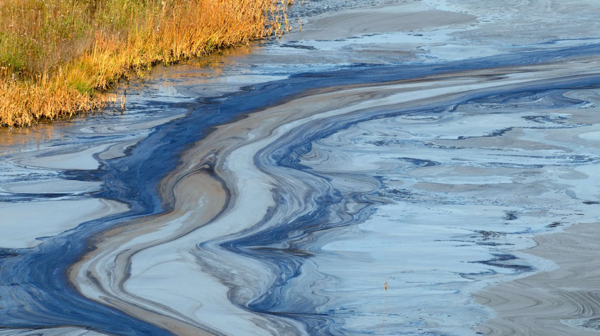
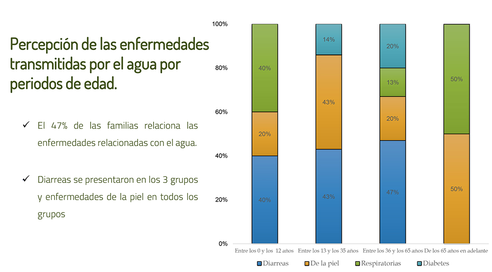

💧 Contaminacion del Agua 🧪
New Beggining
Esta problematica afecta a todo el mundo.Al comer pescados y mariscos procedentes de agua contaminada se da el efecto bioacumulativo del mercurio y otros metales pesados y también de las pequeñas partículas plásticas, conocidas como los microplásticos.
More About


Region
En Argentina el 15% de la población no tiene acceso al agua potable, el 40% vive sin cloacas y apenas el 20% de las aguas residuales cuenta con un tratamiento en el país.
Esta problematica afecta mucho a paises con escaso acceso al agua potable como: Haiti, Madagascar, Mozambique y Afganistan.
More About